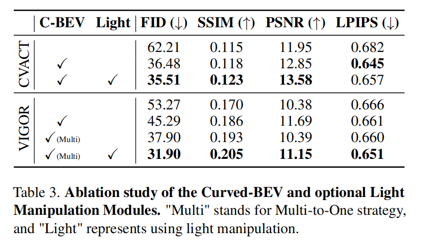
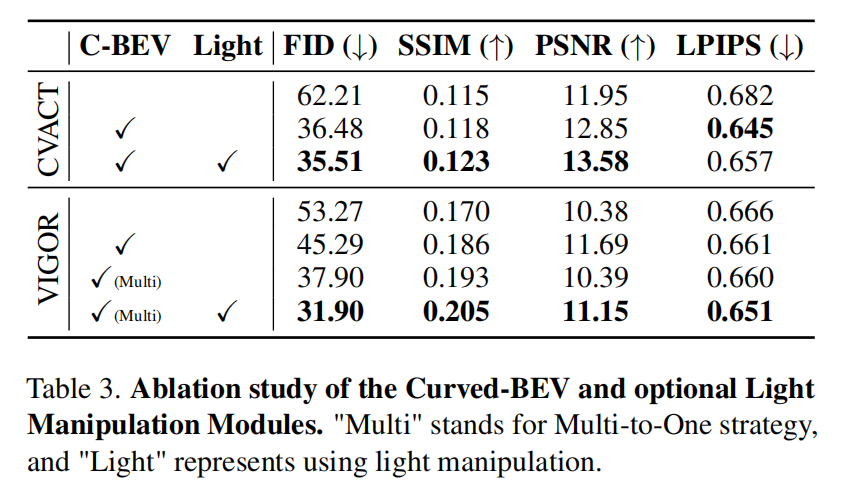

SkyDiffusion
SkyDiffusion
Ground-to-Aerial Image Synthesis
with Diffusion Models
and BEV Paradigm
Task Description
Ground-to-aerial image synthesis focuses on generating realistic aerial images from corresponding ground street view
images while maintaining consistent content layout, simulating a top-down view.

Ground-to-aerial image synthesis focuses on generating realistic aerial images from corresponding ground street view images while maintaining consistent content layout, simulating a top-down view.
Challenge
The significant viewpoint difference
leads to domain gaps between views, and dense urban scenes limit the visible range of street views, making this
cross-view generation task particularly challenging.

The significant viewpoint difference leads to domain gaps between views, and dense urban scenes limit the visible range of street views, making this cross-view generation task particularly challenging.
Method
We introduce SkyDiffusion, a novel cross-view generation method for synthesizing aerial images from
street view images, utilizing a diffusion model and the Bird’s-Eye View (BEV) paradigm.

We introduce SkyDiffusion, a novel cross-view generation method for synthesizing aerial images from street view images, utilizing a diffusion model and the Bird’s-Eye View (BEV) paradigm.
New Dataset
We introduce a novel dataset, Ground2Aerial-3, designed for diverse ground-to-aerial
image synthesis
applications, including disaster scene aerial synthesis, historical high-resolution satellite image synthesis, and
low-altitude UAV image synthesis tasks.

We introduce a novel dataset, Ground2Aerial-3, designed for diverse ground-to-aerial image synthesis applications, including disaster scene aerial synthesis, historical high-resolution satellite image synthesis, and low-altitude UAV image synthesis tasks.
The video shows the result of pulling up from the ground street view to the aerial perspective, like a sky-down
perspective. The video comes from Google Engine rendering and MatrixCity rendering


 
